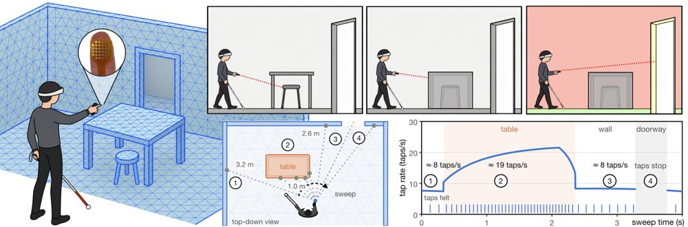
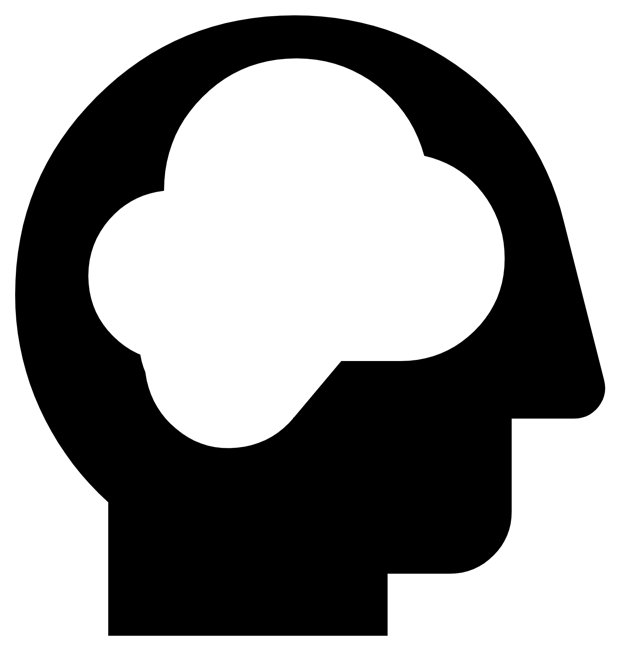
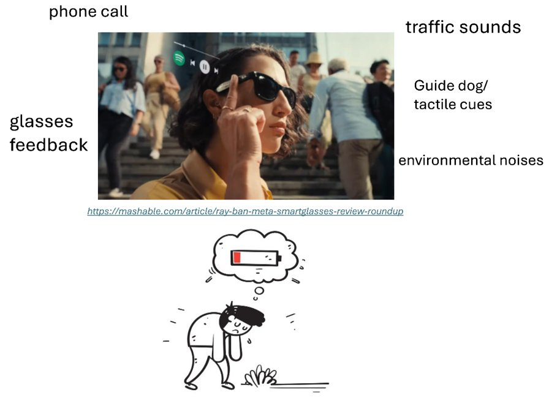
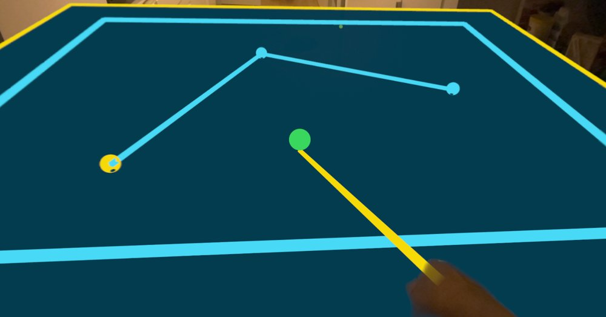
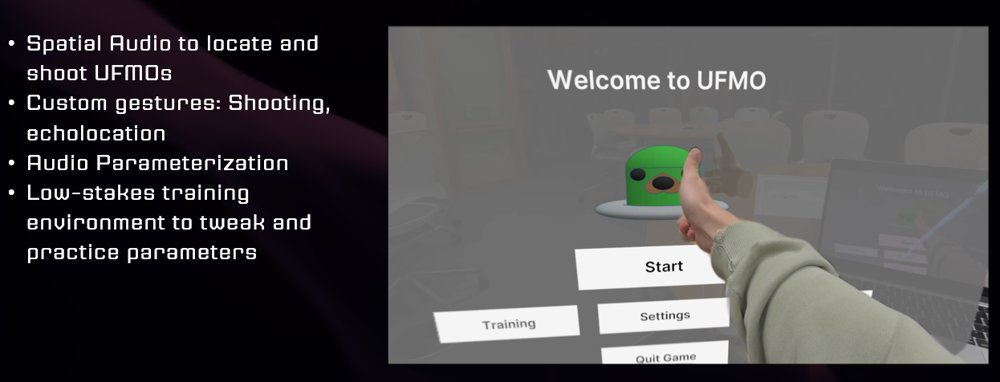

UTS × USyd · Human Augmentation Lab
Explore our research
Community Open Lab Forum · 30 November 2026
Discover how sound, touch and wearable technology could support everyday navigation for people who are blind or have low vision.
Yihao
Exploring space through touch

Listen to the 20-second explanation
Transcript
What if you could feel nearby objects without physically touching them? We are exploring how small electrical pulses on the skin can communicate information about surrounding spaces, helping people identify objects, walls and doorways by pointing towards them.
Nhan
Translating sound to shapes in the brain

Listen to the 20-second explanation
Transcript
Can our brains build a mental representation of shapes using sound alone? We are investigating how the brain interprets auditory information and whether this can help people understand their surroundings in new ways, without relying on vision.
Shurui
Auditory landmarks
Listen to the 20-second explanation
Transcript
Imagine being able to hear which direction is north, wherever you turn. We are exploring whether a consistent directional sound can act as an auditory compass, helping people stay oriented and build a mental map of their surroundings.
Minh
Adapting to cognitive workload

Listen to the 20-second explanation
Transcript
Too much information can make navigation more demanding. We are investigating how wearable technology could recognise when someone is mentally overloaded and adapt the information it provides, prioritising what matters most at the right moment.
Yu
Auditory boundary and depth

Listen to the 20-second explanation
Transcript
Can you understand the shape and size of a space through sound? We are investigating how the location, pitch and character of sounds can communicate distances, corners and boundaries, helping people develop a richer understanding of their surroundings.
Nina & Zac
Games for training sensory augmentation

Listen to the 20-second explanation
Transcript
Everyone experiences sound differently. We are developing a game where people can personalise sounds that represent the location of objects, practise interpreting them, and explore how these skills might transfer to everyday navigation.